正文
16 聚类分析
16.1 聚类分析概述
16.1.2 距离和相似性
1. 欧氏距离
可以简单地描述为多维空间中点与点之间的几何距离.
2. 曼哈顿距离
计算从一个点到另一个点所经过的折线距离, 取消了欧氏距离中的平方操作, 使得一些离群点的影响会相对减弱
3. 闵可夫斯基距离
对于高维数据, 闵可夫斯基距离是一种更加流行的距离度量方法
其中是待选的指数, 如果, 闵可夫斯基变为曼哈顿距离, 如果, 闵可夫斯基距离变为欧氏距离
4. 相关性及相关距离
可以用皮尔森相关系数度量样本之间的相关性
可以用表示相关距离, 当相关性增强时, 相关系数增加, 相关距离会减小, 趋向于 0
16.1.3 聚类分析的类型
聚类分析从不同的角度有多种分类方法
-
基于聚类方法的嵌套性: 基于划分、基于层次
-
基于聚类方法的准确性: 精确分类、模糊分类
-
基于分类方法的完全性: 完全聚类、部分聚类
-
基于簇的特性:
- 基于原型的聚类: 原型一般指样本空间中一些具有代表性的点.也可以称为基于中心的聚类
- 基于图的聚类: 以图论为基础, 将聚类问题转换为图的最优划分问题, 簇内的数据对象相互连接, 簇之间的对象没有连接
- 基于密度的聚类: 利用点的密度作为聚类依据(以这个点为圆心, 以某个值作为半径构成的邻域内点的个数)
16.2 层次聚类
层次聚类法是将相近的有关联的点聚合成簇, 产生一个分层次的聚类树
从聚类的特点上看, 一部分的层次聚类方法有图聚类的特性, 另一部分的层次聚类法有原型聚类的特性
16.2.2 层次聚类流程
1. 将每个数据点作为一个簇, 计算每个簇之间的距离矩阵
2. 合并距离最近的两个簇
簇之间的距离计算方法:
- 最小距离, 将两个簇的数据点中距离最近的两个点之间的距离作为这两个簇之间的距离
- 最大距离, 最大距离的计算方法与最小距离相反, 将两个簇的数据点中距离最远的两个点之间的距离作为这两个簇之间的距离
- 平均距离, 计算两个簇中的每个数据点之间的距离, 然后将所有距离的均值作为两个簇之间的距离, 计算量较大但更加合理
16.2.3 层次聚类实例
1. 层次聚类对种子特性数据的分析
# 引入层次聚类函数, 树状图函数
from scipy.cluster.hierarchy import linkage, dendrogram
import matplotlib.pyplot as plt
# 引入坐标轴显示控制库
from matplotlib.ticker import MultipleLocator
import pandas as pd
%matplotlib inlineseeds_df = pd.read_csv("seeds-less-rows.csv")
seeds_df.head()| area | perimeter | compactness | length | width | asymmetry_coefficient | groove_length | grain_variety | |
|---|---|---|---|---|---|---|---|---|
| 0 | 14.88 | 14.57 | 0.8811 | 5.554 | 3.333 | 1.018 | 4.956 | Kama wheat |
| 1 | 14.69 | 14.49 | 0.8799 | 5.563 | 3.259 | 3.586 | 5.219 | Kama wheat |
| 2 | 14.03 | 14.16 | 0.8796 | 5.438 | 3.201 | 1.717 | 5.001 | Kama wheat |
| 3 | 13.99 | 13.83 | 0.9183 | 5.119 | 3.383 | 5.234 | 4.781 | Kama wheat |
| 4 | 14.11 | 14.26 | 0.8722 | 5.520 | 3.168 | 2.688 | 5.219 | Kama wheat |
查看种子数据集的类别信息
seeds_df.grain_variety.value_counts()Kama wheat 14
Rosa wheat 14
Canadian wheat 14
Name: grain_variety, dtype: int64
如果应用上述数据进行层次聚类, 需要去除样本数据集中的类别标识
varieties = list(seeds_df.pop('grain_variety')) # 去除类别
samples = seeds_df.values # 去除 columns
samplesarray([[14.88 , 14.57 , 0.8811, 5.554 , 3.333 , 1.018 , 4.956 ],
[14.69 , 14.49 , 0.8799, 5.563 , 3.259 , 3.586 , 5.219 ],
[14.03 , 14.16 , 0.8796, 5.438 , 3.201 , 1.717 , 5.001 ],
[13.99 , 13.83 , 0.9183, 5.119 , 3.383 , 5.234 , 4.781 ],
[14.11 , 14.26 , 0.8722, 5.52 , 3.168 , 2.688 , 5.219 ],
[13.02 , 13.76 , 0.8641, 5.395 , 3.026 , 3.373 , 4.825 ],
[15.49 , 14.94 , 0.8724, 5.757 , 3.371 , 3.412 , 5.228 ],
[16.2 , 15.27 , 0.8734, 5.826 , 3.464 , 2.823 , 5.527 ],
[13.5 , 13.85 , 0.8852, 5.351 , 3.158 , 2.249 , 5.176 ],
[15.36 , 14.76 , 0.8861, 5.701 , 3.393 , 1.367 , 5.132 ],
[15.78 , 14.91 , 0.8923, 5.674 , 3.434 , 5.593 , 5.136 ],
[14.46 , 14.35 , 0.8818, 5.388 , 3.377 , 2.802 , 5.044 ],
[11.23 , 12.63 , 0.884 , 4.902 , 2.879 , 2.269 , 4.703 ],
[14.34 , 14.37 , 0.8726, 5.63 , 3.19 , 1.313 , 5.15 ],
[16.84 , 15.67 , 0.8623, 5.998 , 3.484 , 4.675 , 5.877 ],
[17.32 , 15.91 , 0.8599, 6.064 , 3.403 , 3.824 , 5.922 ],
[18.72 , 16.19 , 0.8977, 6.006 , 3.857 , 5.324 , 5.879 ],
[18.88 , 16.26 , 0.8969, 6.084 , 3.764 , 1.649 , 6.109 ],
[18.76 , 16.2 , 0.8984, 6.172 , 3.796 , 3.12 , 6.053 ],
[19.31 , 16.59 , 0.8815, 6.341 , 3.81 , 3.477 , 6.238 ],
[17.99 , 15.86 , 0.8992, 5.89 , 3.694 , 2.068 , 5.837 ],
[18.85 , 16.17 , 0.9056, 6.152 , 3.806 , 2.843 , 6.2 ],
[19.38 , 16.72 , 0.8716, 6.303 , 3.791 , 3.678 , 5.965 ],
[18.96 , 16.2 , 0.9077, 6.051 , 3.897 , 4.334 , 5.75 ],
[18.14 , 16.12 , 0.8772, 6.059 , 3.563 , 3.619 , 6.011 ],
[18.65 , 16.41 , 0.8698, 6.285 , 3.594 , 4.391 , 6.102 ],
[18.94 , 16.32 , 0.8942, 6.144 , 3.825 , 2.908 , 5.949 ],
[17.36 , 15.76 , 0.8785, 6.145 , 3.574 , 3.526 , 5.971 ],
[13.32 , 13.94 , 0.8613, 5.541 , 3.073 , 7.035 , 5.44 ],
[11.43 , 13.13 , 0.8335, 5.176 , 2.719 , 2.221 , 5.132 ],
[12.01 , 13.52 , 0.8249, 5.405 , 2.776 , 6.992 , 5.27 ],
[11.34 , 12.87 , 0.8596, 5.053 , 2.849 , 3.347 , 5.003 ],
[12.02 , 13.33 , 0.8503, 5.35 , 2.81 , 4.271 , 5.308 ],
[12.44 , 13.59 , 0.8462, 5.319 , 2.897 , 4.924 , 5.27 ],
[11.55 , 13.1 , 0.8455, 5.167 , 2.845 , 6.715 , 4.956 ],
[11.26 , 13.01 , 0.8355, 5.186 , 2.71 , 5.335 , 5.092 ],
[12.46 , 13.41 , 0.8706, 5.236 , 3.017 , 4.987 , 5.147 ],
[11.81 , 13.45 , 0.8198, 5.413 , 2.716 , 4.898 , 5.352 ],
[11.27 , 12.86 , 0.8563, 5.091 , 2.804 , 3.985 , 5.001 ],
[12.79 , 13.53 , 0.8786, 5.224 , 3.054 , 5.483 , 4.958 ],
[12.67 , 13.32 , 0.8977, 4.984 , 3.135 , 2.3 , 4.745 ],
[11.23 , 12.88 , 0.8511, 5.14 , 2.795 , 4.325 , 5.003 ]])
进行层次聚类
# 进行层次聚类
mergings = linkage(samples, method='complete')
# 绘制树状图
plt.figure(figsize=(10,6),dpi=80)
ax = plt.subplot(111)
dendrogram(mergings,
labels=varieties,
leaf_rotation=90,
leaf_font_size=10,)
yminorLocator = MultipleLocator(0.2)
ax.yaxis.set_minor_locator(yminorLocator)
plt.show(){kind=link}
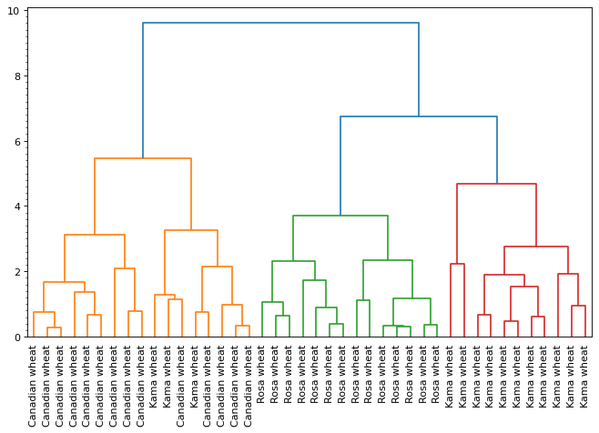
# 得到某一层次上的分类结果
from scipy.cluster.hierarchy import fcluster
# 获取最大分类距离为 6 的层次聚类结果
labels = fcluster(mergings, 6, criterion='distance')
df = pd.DataFrame({'labels': labels, 'varieties': varieties})
# 统计每个簇中不同类别的个数
ct = pd.crosstab(df['labels'], df['varieties'])
ct| varieties | Canadian wheat | Kama wheat | Rosa wheat |
|---|---|---|---|
| labels | |||
| 1 | 14 | 3 | 0 |
| 2 | 0 | 0 | 14 |
| 3 | 0 | 11 | 0 |
2. 不同距离计算方式对层次聚类结果的影响
import pandas as pd
scores_df = pd.read_csv('eurovision-2016-televoting.csv', index_col=0)
country_names = list(scores_df.index)
scores_df.head()| Armenia | Australia | Austria | Azerbaijan | Belgium | Bulgaria | Croatia | Cyprus | Czech Republic | France | ... | Lithuania | Malta | Poland | Russia | Serbia | Spain | Sweden | The Netherlands | Ukraine | United Kingdom | |
|---|---|---|---|---|---|---|---|---|---|---|---|---|---|---|---|---|---|---|---|---|---|
| From country | |||||||||||||||||||||
| Albania | 2.0 | 12.0 | 0.0 | 0.0 | 0.0 | 8.0 | 0.0 | 0.0 | 0.0 | 0.0 | ... | 4.0 | 0.0 | 5.0 | 7.0 | 0.0 | 0.0 | 3.0 | 0.0 | 6.0 | 0.0 |
| Armenia | NaN | 0.0 | 4.0 | 0.0 | 0.0 | 0.0 | 0.0 | 6.0 | 0.0 | 7.0 | ... | 0.0 | 5.0 | 1.0 | 12.0 | 0.0 | 0.0 | 2.0 | 0.0 | 10.0 | 0.0 |
| Australia | 0.0 | NaN | 3.0 | 0.0 | 12.0 | 10.0 | 0.0 | 0.0 | 0.0 | 7.0 | ... | 1.0 | 6.0 | 0.0 | 5.0 | 0.0 | 2.0 | 0.0 | 0.0 | 8.0 | 4.0 |
| Austria | 0.0 | 3.0 | NaN | 0.0 | 0.0 | 5.0 | 0.0 | 0.0 | 0.0 | 1.0 | ... | 0.0 | 0.0 | 12.0 | 8.0 | 4.0 | 0.0 | 7.0 | 6.0 | 10.0 | 0.0 |
| Azerbaijan | 0.0 | 2.0 | 0.0 | NaN | 0.0 | 8.0 | 0.0 | 0.0 | 0.0 | 4.0 | ... | 0.0 | 5.0 | 3.0 | 12.0 | 0.0 | 0.0 | 0.0 | 0.0 | 10.0 | 0.0 |
5 rows × 26 columns
# 填充 Nan 数据
scores_df = scores_df.fillna(12)
from sklearn.preprocessing import normalize
# 数据归一化处理
samples = normalize(scores_df.values)
samplesarray([[0.09449112, 0.56694671, 0. , ..., 0. , 0.28347335,
0. ],
[0.49319696, 0. , 0.16439899, ..., 0. , 0.41099747,
0. ],
[0. , 0.49319696, 0.12329924, ..., 0. , 0.32879797,
0.16439899],
...,
[0.32879797, 0.20549873, 0.24659848, ..., 0.49319696, 0.28769823,
0. ],
[0.28769823, 0.16439899, 0. , ..., 0. , 0.49319696,
0. ],
[0. , 0.24659848, 0. , ..., 0. , 0.20549873,
0.49319696]])
plt.figure(figsize=(10,12),dpi=80)
plt.subplots_adjust(hspace=0.5)
# single method distance clustering 最短距离
mergings = linkage(samples, method='single')
p1 = plt.subplot(211)
yminorLocator = MultipleLocator(0.05)
p1.yaxis.set_minor_locator(yminorLocator)
dendrogram(mergings,
labels=country_names,
leaf_rotation=90,
leaf_font_size=10,
)
p1.set_title("single-min distance",fontsize=18)
# complete method distance clustering 最长距离
mergings = linkage(samples, method='complete')
p2 = plt.subplot(212)
yminorLocator = MultipleLocator(0.05)
p2.yaxis.set_minor_locator(yminorLocator)
dendrogram(mergings,
labels=country_names,
leaf_rotation=90,
leaf_font_size=10,
)
p2.set_title("complete-max distance",fontsize=18)
plt.show(){kind=link}
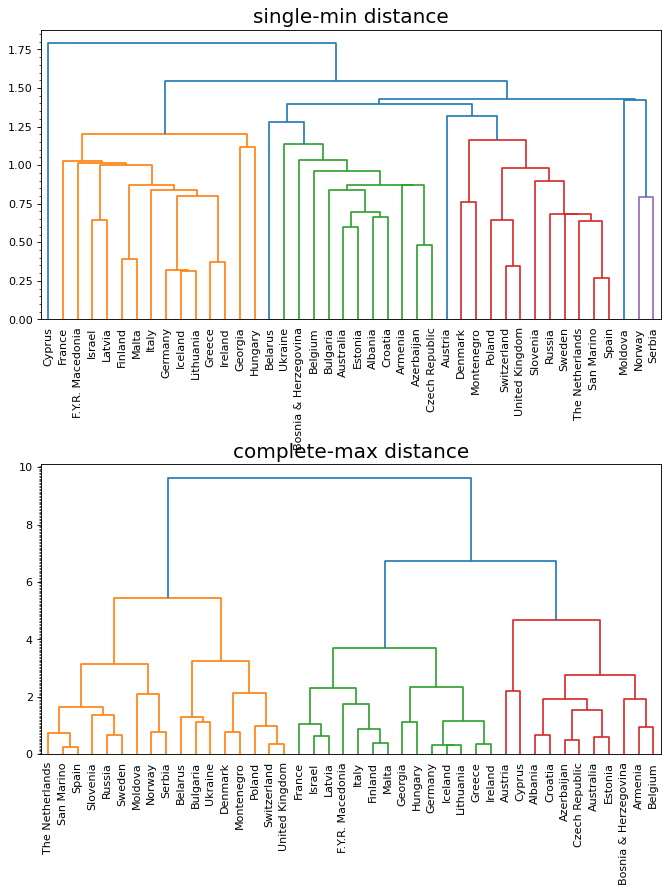
16.3 K-Means 聚类
K-means 有一个著名的解释：牧师—村民模型：
有四个牧师去郊区布道，一开始牧师们随意选了几个布道点，并且把这几个布道点的情况公告给了郊区所有的村民，于是每个村民到离自己家最近的布道点去听课。 听课之后，大家觉得距离太远了，于是每个牧师统计了一下自己的课上所有的村民的地址，搬到了所有地址的中心地带，并且在海报上更新了自己的布道点的位置。 牧师每一次移动不可能离所有人都更近，有的人发现 A 牧师移动以后自己还不如去 B 牧师处听课更近，于是每个村民又去了离自己最近的布道点…… 就这样，牧师每个礼拜更新自己的位置，村民根据自己的情况选择布道点，最终稳定了下来
-
优势: 简单, 快速, 适合常规数据集
-
劣势: K 值难确定, 复杂度与样本呈线性关系, 很难发现任意形状的簇
16.3.2 K-Means 算法流程
-
1 选择 K 个数据点作为数据簇的质心
-
2 计算每个数据点与 K 个质心之间的距离(可选, 一般是欧氏距离), 将其分配到最近的质心所代表的簇中, 形成 K 个簇
-
3 重新计算 K 个簇的质心
-
4 重复 2-3, 直至 K 个簇的质心都不再发生变化
16.3.4 K-Means 聚类实例
1. 应用 sklearn.cluster 模块中的 K-Means 进行聚类操作
- 读出数据文件中的数据, 分析显示数据的结构
import matplotlib.pyplot as plt
from sklearn.cluster import KMeans
import pandas as pd
df = pd.read_csv("ch1ex1.csv")
points = df.values
df.head()| 0 | 1 | |
|---|---|---|
| 0 | 0.065446 | -0.768664 |
| 1 | -1.529015 | -0.429531 |
| 2 | 1.709934 | 0.698853 |
| 3 | 1.167791 | 1.012626 |
| 4 | -1.801101 | -0.318613 |
- 原始数据样本的散点图绘制
plt.figure(figsize=(10, 6), dpi=80)
xs = points[:, 0]
ys = points[:, 1]
plt.scatter(xs, ys)
plt.show(){kind=link}
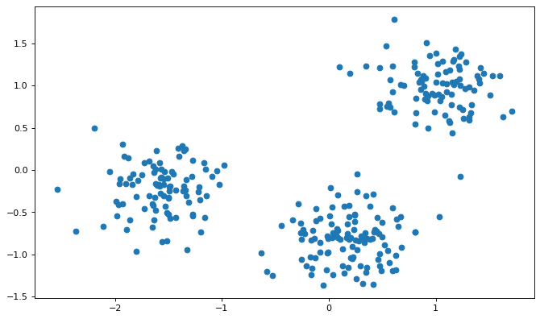
可以看出数据样本点分成形状较规则的 3 个部分, 使用 K-Means 算法进行聚类
- 聚类操作
model = KMeans(n_clusters=3)
model.fit(points)
labels = model.predict(points)
print(labels)[1 2 0 0 2 2 0 1 2 2 0 1 2 0 2 1 0 0 1 0 2 1 2 1 1 2 1 1 1 2 0 0 0 2 1 2 1
1 2 1 1 0 2 2 2 1 1 0 1 0 0 0 1 1 1 2 1 1 2 0 2 1 1 0 0 2 0 2 2 1 0 2 0 1
0 2 1 1 1 0 1 2 0 2 2 2 2 1 1 0 2 0 2 1 1 1 0 2 2 0 2 1 2 0 1 0 0 0 2 2 1
2 0 2 2 2 1 2 0 0 1 1 1 1 1 2 0 1 2 2 0 0 2 1 2 1 0 2 0 1 0 0 1 0 0 1 0 2
1 1 1 0 0 2 0 2 1 1 0 2 0 0 0 2 1 1 2 0 0 1 1 0 1 1 2 1 0 0 0 1 1 0 1 0 0
1 2 0 1 1 1 1 2 0 1 2 2 2 1 2 1 1 2 0 0 1 0 1 1 2 2 1 0 2 0 1 0 2 1 2 2 2
2 0 0 0 1 1 2 1 0 2 1 1 2 1 0 0 0 0 0 2 1 1 0 0 1 2 0 2 2 1 1 2 2 2 1 0 1
2 1 0 0 0 0 0 1 1 2 1 1 2 0 0 2 1 0 0 2 2 1 1 1 2 2 1 0 2 2 0 1 1 1 2 1 1
1 2 2 2]
显示了 300 个数据样本点的聚类结果, 即将它们分别归到 0, 1, 2 这 3 个簇中
- 聚类结果的数据显示
# 聚类中心
centroids = model.cluster_centers_
centroids_x = centroids[:, 0] # 重心 x 坐标
centroids_y = centroids[:, 1] # 重心 y 坐标
# 原始数据点
xs = points[:, 0]
ys = points[:, 1]
# 创建标记和颜色 list
mk0 = ['o', ',', 'v'] # 符号形状
cs0 = ['r', 'g', 'b'] # 颜色
mk1 = [] # 各个点的符号形状
cs1 = [] # 各个点的颜色
for e in labels:
mk1.append(mk0[e])
cs1.append(cs0[e])
plt.figure(figsize=(10, 6), dpi=120)
plt.subplot(111)
for x, y, cr, m in zip(xs, ys, cs1, mk1):
plt.scatter(x, y, edgecolors=cr, facecolors='none', marker=m)
plt.scatter(centroids_x, centroids_y, marker='X', s=200, c='k') # 绘制重心
plt.show(){kind=link}
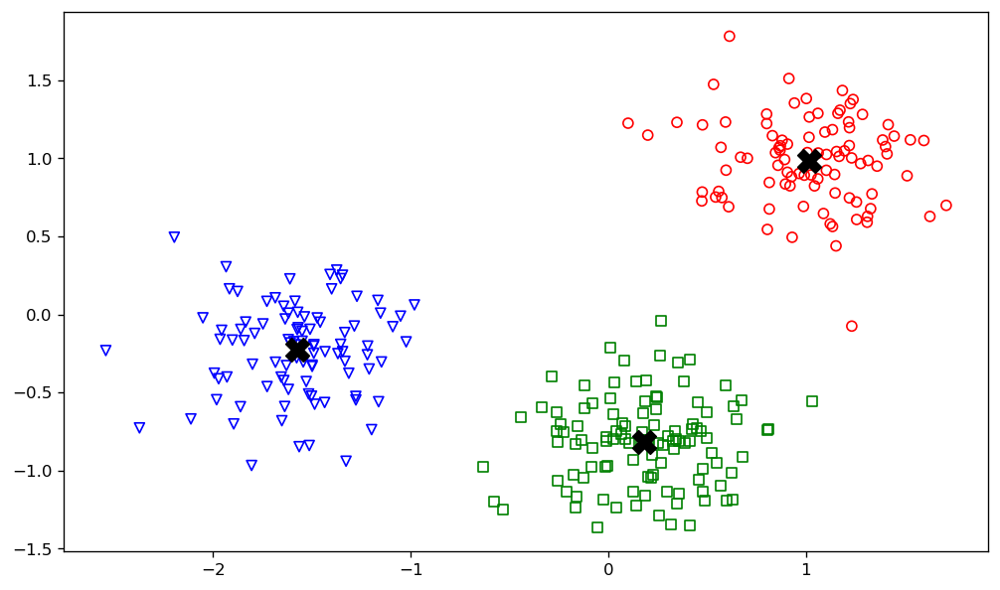
2. 显示 K 值对聚类结果的影响
找不到 seeds.csv 这个文件, 用 seeds-less-rows.csv 代替一下吧
import pandas as pd
from sklearn.cluster import KMeans
import matplotlib.pyplot as plt
seeds_df = pd.read_csv('seeds-less-rows.csv')
varieties = list(seeds_df['grain_variety'])
del seeds_df['grain_variety']
samples = seeds_df.values
ks = range(1, 6)
inertias = []
for k in ks:
# Create a KMeans instance with k clusters: model
model = KMeans(n_clusters=k)
# Fit model to samples
model.fit(samples)
# Append the inertia to the list of inertias
inertias.append(model.inertia_)
plt.figure(figsize=(10,6),dpi=80)
plt.subplot(111)
# Plot ks vs inertias
plt.plot(ks, inertias, '-o')
plt.xlabel('number of clusters, k')
plt.ylabel('inertia')
plt.xticks(ks)
plt.show()C:\Users\gzjzx\anaconda3\lib\site-packages\sklearn\cluster\_kmeans.py:1036: UserWarning: KMeans is known to have a memory leak on Windows with MKL, when there are less chunks than available threads. You can avoid it by setting the environment variable OMP_NUM_THREADS=1.
warnings.warn(
{kind=link}
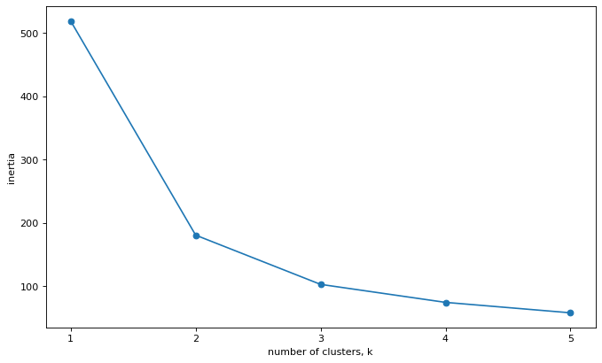
随着 K 值增大, 聚类结果拥有更小的 interias 指标(表示样本数据点到所属簇的质心的距离综合), 结果更具有合理性
3. 使用 sklearn.pipeline 模块中的 make_pipeline 简化操作
import pandas as pd
df = pd.read_csv('fish.csv')
species = list(df['species'])
del df['species']
df.head()| weight | length1 | length2 | length3 | height | width | |
|---|---|---|---|---|---|---|
| 0 | 242.0 | 23.2 | 25.4 | 30.0 | 38.4 | 13.4 |
| 1 | 290.0 | 24.0 | 26.3 | 31.2 | 40.0 | 13.8 |
| 2 | 340.0 | 23.9 | 26.5 | 31.1 | 39.8 | 15.1 |
| 3 | 363.0 | 26.3 | 29.0 | 33.5 | 38.0 | 13.3 |
| 4 | 430.0 | 26.5 | 29.0 | 34.0 | 36.6 | 15.1 |
通过 pipeline 模块, 组合调用数据预处理, 数据聚类等操作, 实现数据的聚类
from sklearn.pipeline import make_pipeline
from sklearn.preprocessing import StandardScaler
from sklearn.cluster import KMeans
samples = df.values
scaler = StandardScaler()
kmeans = KMeans(n_clusters=4)
pipeline = make_pipeline(scaler, kmeans)
pipeline.fit(samples)
labels = pipeline.predict(samples)
df = pd.DataFrame({'labels': labels, 'species': species})
ct = pd.crosstab(df['labels'], df['species'])
ct| species | Bream | Pike | Roach | Smelt |
|---|---|---|---|---|
| labels | ||||
| 0 | 33 | 0 | 1 | 0 |
| 1 | 1 | 0 | 19 | 1 |
| 2 | 0 | 17 | 0 | 0 |
| 3 | 0 | 0 | 0 | 13 |
16.4 DBSCAN 聚类
LATER ADD TO QUEUE Clustering with DBSCAN, Clearly Explained!!!(Youtube)
{kind=link}
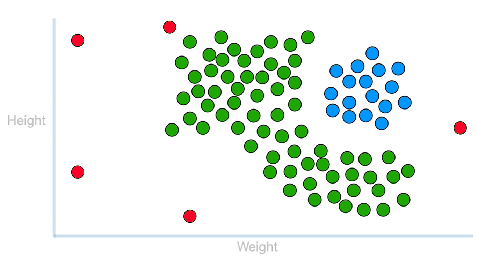
-
Eps- 邻域
- 由用户设定, 以某个数据点为圆心, 以 Eps 的值为半径, 形成一个邻域
-
MinPts 阈值
- 度量 Eps- 邻域 内数据点数量的一个阈值. 对二维的数据集而言, 一般取 MinPts = 4
-
核心点
- 在数据点的 Eps- 邻域 中, 如果数据点的数量 ≥ Minpts, 则该数据点被称为核心点
-
边界点
- 数据点的 Eps- 邻域 中, 数据点的数量 < MinPts, 但该点的 Eps- 邻域 内至少有一个核心点 或 该点落在某个核心点的 Eps- 邻域 内, 则称该数据为边界点
-
噪声点
- 在数据点的 Eps- 邻域 中, 数据点的数量＜MinPts, 但该点不是边界点, 即该点的 Eps- 邻域 内没有任何一个核心点, 则称该点为噪声点
16.4.3 DBSCAN 聚类实例
#16-10.py
import numpy as np
import matplotlib.pyplot as plt
from sklearn import datasets
from sklearn.cluster import DBSCAN
from collections import Counter
%matplotlib inline
plt.figure(figsize=(12,8),dpi=100)
# Generate the Data Source with sklearn
"""
make_moons 是函数用来生成数据集
n_numbers:生成样本数量
shuffle:数据是否打乱
noise:默认是 false，数据集是否加入高斯噪声
random_state:生成随机种子，给定一个 int 型数据，能够保证每次生成数据相同。
"""
X1, _ = datasets.make_moons(n_samples=500, noise=.05)
X2, _ = datasets.make_blobs(n_samples=100, n_features=2, centers=[[1.2,1.2]],
cluster_std=[[.1]],random_state=9)
X = np.concatenate((X1, X2))
# colors and markers for the scatter graph
# 前 6 个为分类标识, 最后一个为噪声点标识
colors = ['black','green','yellow','brown','blue','orange','red']
markers = ['o',',','v','^','<','>','x']
# Graph for the Data Source
p11 = plt.subplot(221)
p11.set_title('Data Source Graph')
plt.scatter(X[:, 0], X[:, 1],c=colors[0], marker=markers[0])
# Graph for the clustering with default params
p12 = plt.subplot(222)
p12.set_title('Clustering BY DB with Defaut params')
y_pred = DBSCAN().fit_predict(X)
for x,y,i in zip(X[:,0],X[:,1],y_pred):
plt.scatter(x,y,c=colors[i],marker=markers[i])
# Graph for the clustering with specified params
p21 = plt.subplot(223)
p21.set_title('Clustering BY DB with Eps=0.1')
y_pred = DBSCAN(eps = 0.10, min_samples = 10).fit_predict(X)
for x,y,i in zip(X[:,0],X[:,1],y_pred):
plt.scatter(x,y,c=colors[i],marker=markers[i])
# Graph for the clustering with specified params
p22 = plt.subplot(224)
p22.set_title('Clustering BY DB with Eps=0.12')
y_pred = DBSCAN(eps = 0.12, min_samples = 10).fit_predict(X)
for x,y,i in zip(X[:,0],X[:,1],y_pred):
plt.scatter(x,y,c=colors[i],marker=markers[i])
plt.show(){kind=link}
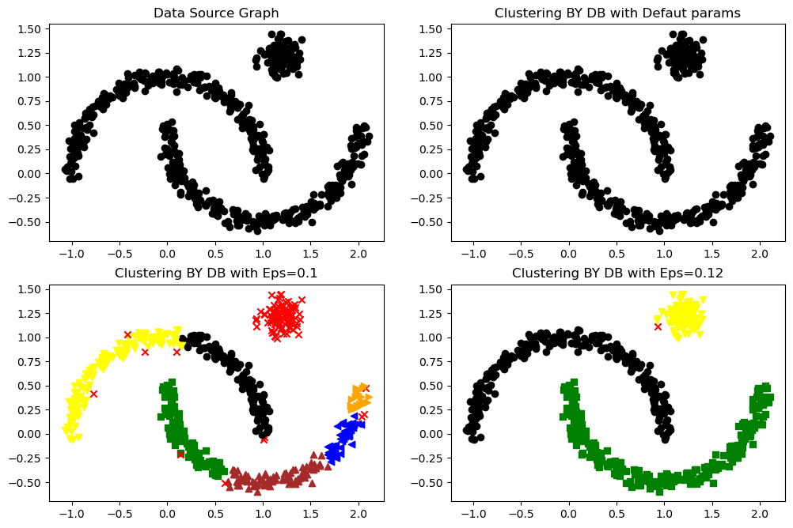
16.5 综合实例——聚类分析
使用 K-Means 算法和 DBSCAN 算法分析一个有关啤酒的数据集
1 数据集读入及预处理
import pandas as pd
beer = pd.read_csv('data.txt', sep=' ')
beer| name | calories | sodium | alcohol | cost | |
|---|---|---|---|---|---|
| 0 | Budweiser | 144 | 15 | 4.7 | 0.43 |
| 1 | Schlitz | 151 | 19 | 4.9 | 0.43 |
| 2 | Lowenbrau | 157 | 15 | 0.9 | 0.48 |
| 3 | Kronenbourg | 170 | 7 | 5.2 | 0.73 |
| 4 | Heineken | 152 | 11 | 5.0 | 0.77 |
| 5 | Old_Milwaukee | 145 | 23 | 4.6 | 0.28 |
| 6 | Augsberger | 175 | 24 | 5.5 | 0.40 |
| 7 | Srohs_Bohemian_Style | 149 | 27 | 4.7 | 0.42 |
| 8 | Miller_Lite | 99 | 10 | 4.3 | 0.43 |
| 9 | Budweiser_Light | 113 | 8 | 3.7 | 0.40 |
| 10 | Coors | 140 | 18 | 4.6 | 0.44 |
| 11 | Coors_Light | 102 | 15 | 4.1 | 0.46 |
| 12 | Michelob_Light | 135 | 11 | 4.2 | 0.50 |
| 13 | Becks | 150 | 19 | 4.7 | 0.76 |
| 14 | Kirin | 149 | 6 | 5.0 | 0.79 |
| 15 | Pabst_Extra_Light | 68 | 15 | 2.3 | 0.38 |
| 16 | Hamms | 139 | 19 | 4.4 | 0.43 |
| 17 | Heilemans_Old_Style | 144 | 24 | 4.9 | 0.43 |
| 18 | Olympia_Goled_Light | 72 | 6 | 2.9 | 0.46 |
| 19 | Schlitz_Light | 97 | 7 | 4.2 | 0.47 |
2 K-Means 聚类
from sklearn.cluster import KMeans
X = beer[['calories', 'sodium', 'alcohol', 'cost']]
km2 = KMeans(n_clusters=2).fit(X) # K = 2 时的聚类结果
km3 = KMeans(n_clusters=3).fit(X) # K = 3 时的聚类结果
beer['cluster2'] = km2.labels_
beer['cluster3'] = km3.labels_
beer.sort_values('cluster2')| name | calories | sodium | alcohol | cost | cluster2 | cluster3 | |
|---|---|---|---|---|---|---|---|
| 0 | Budweiser | 144 | 15 | 4.7 | 0.43 | 0 | 0 |
| 1 | Schlitz | 151 | 19 | 4.9 | 0.43 | 0 | 0 |
| 2 | Lowenbrau | 157 | 15 | 0.9 | 0.48 | 0 | 0 |
| 3 | Kronenbourg | 170 | 7 | 5.2 | 0.73 | 0 | 0 |
| 4 | Heineken | 152 | 11 | 5.0 | 0.77 | 0 | 0 |
| 5 | Old_Milwaukee | 145 | 23 | 4.6 | 0.28 | 0 | 0 |
| 6 | Augsberger | 175 | 24 | 5.5 | 0.40 | 0 | 0 |
| 7 | Srohs_Bohemian_Style | 149 | 27 | 4.7 | 0.42 | 0 | 0 |
| 17 | Heilemans_Old_Style | 144 | 24 | 4.9 | 0.43 | 0 | 0 |
| 16 | Hamms | 139 | 19 | 4.4 | 0.43 | 0 | 0 |
| 10 | Coors | 140 | 18 | 4.6 | 0.44 | 0 | 0 |
| 12 | Michelob_Light | 135 | 11 | 4.2 | 0.50 | 0 | 0 |
| 13 | Becks | 150 | 19 | 4.7 | 0.76 | 0 | 0 |
| 14 | Kirin | 149 | 6 | 5.0 | 0.79 | 0 | 0 |
| 15 | Pabst_Extra_Light | 68 | 15 | 2.3 | 0.38 | 1 | 2 |
| 9 | Budweiser_Light | 113 | 8 | 3.7 | 0.40 | 1 | 1 |
| 18 | Olympia_Goled_Light | 72 | 6 | 2.9 | 0.46 | 1 | 2 |
| 8 | Miller_Lite | 99 | 10 | 4.3 | 0.43 | 1 | 1 |
| 11 | Coors_Light | 102 | 15 | 4.1 | 0.46 | 1 | 1 |
| 19 | Schlitz_Light | 97 | 7 | 4.2 | 0.47 | 1 | 1 |
3 聚类结果分析
beer.groupby('cluster2').mean()| calories | sodium | alcohol | cost | cluster3 | |
|---|---|---|---|---|---|
| cluster2 | |||||
| 0 | 91.833333 | 10.166667 | 3.583333 | 0.433333 | 0.666667 |
| 1 | 150.000000 | 17.000000 | 4.521429 | 0.520714 | 1.000000 |
beer.groupby('cluster3').mean()| calories | sodium | alcohol | cost | cluster2 | |
|---|---|---|---|---|---|
| cluster3 | |||||
| 0 | 102.75 | 10.0 | 4.075000 | 0.440000 | 0.0 |
| 1 | 150.00 | 17.0 | 4.521429 | 0.520714 | 1.0 |
| 2 | 70.00 | 10.5 | 2.600000 | 0.420000 | 0.0 |
4 聚类结果的图形显示
import matplotlib.pyplot as plt
import numpy as np
from pandas.plotting import scatter_matrix
plt.rcParams['font.size'] = 14
plt.rcParams['figure.figsize'] = (10, 6)
centers = beer.groupby('cluster3').mean().reset_index()
colors = np.array(['red', 'green', 'blue', 'yellow'])
markers = np.array(['o', ',', 'v', '^'])
for x, y, cr, mr in zip(beer['calories'], beer['alcohol'], colors[beer['cluster3']], markers[beer['cluster3']]):
plt.scatter(x, y, c=cr, marker=mr)
plt.scatter(centers.calories, centers.alcohol, linewidths=3, marker='+', s=300, c='black')
plt.xlabel('Calories')
plt.ylabel('Alcohol')
plt.title('Clustering Result with K = 3')
# K = 2
scatter_matrix(beer[['calories', 'sodium', 'alcohol', 'cost']], s=100, alpha=1,
c=colors[beer["cluster2"]], figsize=(10, 10))
plt.suptitle("With 2 centroids initialized", x=0.5, y=0.92)
# K = 3
scatter_matrix(beer[['calories', 'sodium', 'alcohol', 'cost']], s=100, alpha=1,
c=colors[beer["cluster3"]], figsize=(10, 10))
plt.suptitle("With 3 centroids initialized", x=0.5, y=0.92)
plt.show(){kind=link}
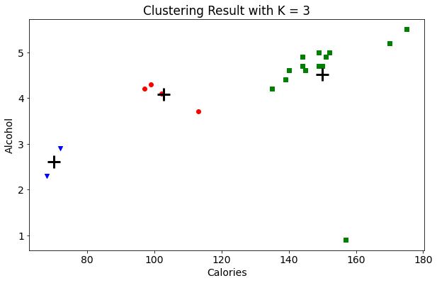
{kind=link}
{kind=link}
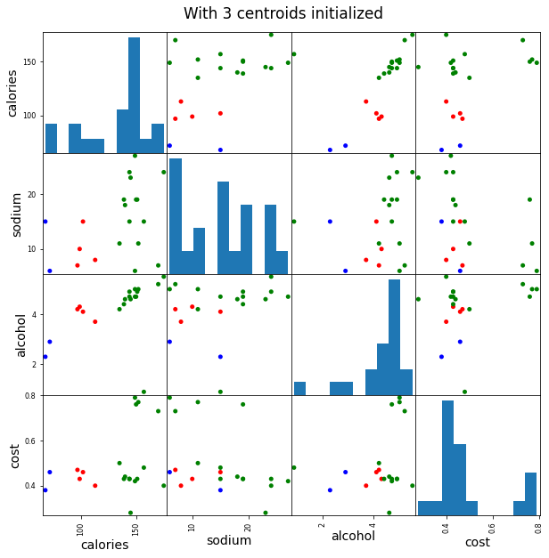
5 数据经标准化之后的聚类分析
sklearn 库的 StandardScaler 模型提供了一种数据标准化方法, 主要用于数据列的变换
表示待标准化的数据, 表示数据的均值, 表示数据的标准差
from sklearn.preprocessing import StandardScaler
scaler = StandardScaler()
X_scaled = scaler.fit_transform(X)
X_scaledarray([[ 0.38791334, 0.00779468, 0.43380786, -0.45682969],
[ 0.6250656 , 0.63136906, 0.62241997, -0.45682969],
[ 0.82833896, 0.00779468, -3.14982226, -0.10269815],
[ 1.26876459, -1.23935408, 0.90533814, 1.66795955],
[ 0.65894449, -0.6157797 , 0.71672602, 1.95126478],
[ 0.42179223, 1.25494344, 0.3395018 , -1.5192243 ],
[ 1.43815906, 1.41083704, 1.1882563 , -0.66930861],
[ 0.55730781, 1.87851782, 0.43380786, -0.52765599],
[-1.1366369 , -0.7716733 , 0.05658363, -0.45682969],
[-0.66233238, -1.08346049, -0.5092527 , -0.66930861],
[ 0.25239776, 0.47547547, 0.3395018 , -0.38600338],
[-1.03500022, 0.00779468, -0.13202848, -0.24435076],
[ 0.08300329, -0.6157797 , -0.03772242, 0.03895447],
[ 0.59118671, 0.63136906, 0.43380786, 1.88043848],
[ 0.55730781, -1.39524768, 0.71672602, 2.0929174 ],
[-2.18688263, 0.00779468, -1.82953748, -0.81096123],
[ 0.21851887, 0.63136906, 0.15088969, -0.45682969],
[ 0.38791334, 1.41083704, 0.62241997, -0.45682969],
[-2.05136705, -1.39524768, -1.26370115, -0.24435076],
[-1.20439469, -1.23935408, -0.03772242, -0.17352445]])
大部分数据都在-2~2 之间, 数据范围基本一致
# 对标准化后的数据重新进行 K-Means 聚类
km = KMeans(n_clusters=3).fit(X_scaled)
beer["scaled_cluster"] = km.labels_
beer.sort_values('scaled_cluster')| name | calories | sodium | alcohol | cost | cluster2 | cluster3 | scaled_cluster | |
|---|---|---|---|---|---|---|---|---|
| 9 | Budweiser_Light | 113 | 8 | 3.7 | 0.40 | 0 | 0 | 0 |
| 15 | Pabst_Extra_Light | 68 | 15 | 2.3 | 0.38 | 0 | 2 | 0 |
| 12 | Michelob_Light | 135 | 11 | 4.2 | 0.50 | 1 | 1 | 0 |
| 11 | Coors_Light | 102 | 15 | 4.1 | 0.46 | 0 | 0 | 0 |
| 18 | Olympia_Goled_Light | 72 | 6 | 2.9 | 0.46 | 0 | 2 | 0 |
| 8 | Miller_Lite | 99 | 10 | 4.3 | 0.43 | 0 | 0 | 0 |
| 19 | Schlitz_Light | 97 | 7 | 4.2 | 0.47 | 0 | 0 | 0 |
| 2 | Lowenbrau | 157 | 15 | 0.9 | 0.48 | 1 | 1 | 0 |
| 7 | Srohs_Bohemian_Style | 149 | 27 | 4.7 | 0.42 | 1 | 1 | 1 |
| 5 | Old_Milwaukee | 145 | 23 | 4.6 | 0.28 | 1 | 1 | 1 |
| 10 | Coors | 140 | 18 | 4.6 | 0.44 | 1 | 1 | 1 |
| 1 | Schlitz | 151 | 19 | 4.9 | 0.43 | 1 | 1 | 1 |
| 16 | Hamms | 139 | 19 | 4.4 | 0.43 | 1 | 1 | 1 |
| 17 | Heilemans_Old_Style | 144 | 24 | 4.9 | 0.43 | 1 | 1 | 1 |
| 6 | Augsberger | 175 | 24 | 5.5 | 0.40 | 1 | 1 | 1 |
| 0 | Budweiser | 144 | 15 | 4.7 | 0.43 | 1 | 1 | 1 |
| 4 | Heineken | 152 | 11 | 5.0 | 0.77 | 1 | 1 | 2 |
| 3 | Kronenbourg | 170 | 7 | 5.2 | 0.73 | 1 | 1 | 2 |
| 13 | Becks | 150 | 19 | 4.7 | 0.76 | 1 | 1 | 2 |
| 14 | Kirin | 149 | 6 | 5.0 | 0.79 | 1 | 1 | 2 |
# 通过每一簇的平均值, 来观察聚类结果的特征
beer.groupby('scaled_cluster').mean()| calories | sodium | alcohol | cost | cluster2 | cluster3 | |
|---|---|---|---|---|---|---|
| scaled_cluster | ||||||
| 0 | 105.375 | 10.875 | 3.3250 | 0.4475 | 0.25 | 0.75 |
| 1 | 148.375 | 21.125 | 4.7875 | 0.4075 | 1.00 | 1.00 |
| 2 | 155.250 | 10.750 | 4.9750 | 0.7625 | 1.00 | 1.00 |
scatter_matrix(X, c=colors[beer.scaled_cluster], alpha=1, figsize=(10, 10), s=100)array([[<AxesSubplot:xlabel='calories', ylabel='calories'>,
<AxesSubplot:xlabel='sodium', ylabel='calories'>,
<AxesSubplot:xlabel='alcohol', ylabel='calories'>,
<AxesSubplot:xlabel='cost', ylabel='calories'>],
[<AxesSubplot:xlabel='calories', ylabel='sodium'>,
<AxesSubplot:xlabel='sodium', ylabel='sodium'>,
<AxesSubplot:xlabel='alcohol', ylabel='sodium'>,
<AxesSubplot:xlabel='cost', ylabel='sodium'>],
[<AxesSubplot:xlabel='calories', ylabel='alcohol'>,
<AxesSubplot:xlabel='sodium', ylabel='alcohol'>,
<AxesSubplot:xlabel='alcohol', ylabel='alcohol'>,
<AxesSubplot:xlabel='cost', ylabel='alcohol'>],
[<AxesSubplot:xlabel='calories', ylabel='cost'>,
<AxesSubplot:xlabel='sodium', ylabel='cost'>,
<AxesSubplot:xlabel='alcohol', ylabel='cost'>,
<AxesSubplot:xlabel='cost', ylabel='cost'>]], dtype=object)
{kind=link}
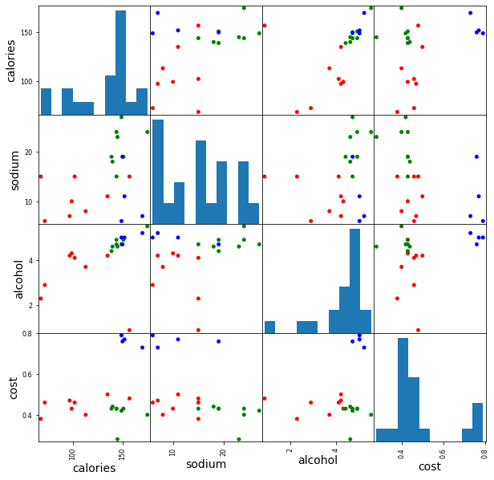
得出结论: 对数据的标准化操作, 不一定会使数据的聚类结果更加有效
6 聚类结果评估
# 计算轮廓系数
from sklearn import metrics
score_scaled = metrics.silhouette_score(X, beer.scaled_cluster)
score = metrics.silhouette_score(X, beer.cluster3)
score_scaled, score(0.1797806808940007, 0.6731775046455796)
未标准化的数据反而有更大的轮廓系数更精确的聚类结果
这说明, 数据集在聚类过程中, 某些数据列具有更高的权值, 这可能是数据本身的要求
7 通过轮廓系数来确定 K-Means 聚类参数
# 在 2~20 持续变化 K 值, 对同一数据进行 K-Means 聚类, 并计算轮廓系数
scores = []
for k in range(2, 20):
labels = KMeans(n_clusters=k).fit(X).labels_
score = metrics.silhouette_score(X, labels)
scores.append(score)
scores[0.6917656034079486,
0.6731775046455796,
0.5857040721127795,
0.422548733517202,
0.4559182167013377,
0.43776116697963124,
0.38946337473125997,
0.39746405172426014,
0.3915697409245163,
0.3413109618039333,
0.3459775237127248,
0.31221439248428434,
0.30707782144770296,
0.31834561839139497,
0.2849514001174898,
0.23498077333071996,
0.1588091017496281,
0.08423051380151177]
随着 K 值的增加, 轮廓系数系数不断变小, 聚类效果变差
plt.plot(list(range(2, 20)), scores)
plt.xlabel('Number of Clusters Initialized')
plt.ylabel('Sihouette Score')Text(0, 0.5, 'Sihouette Score')
{kind=link}
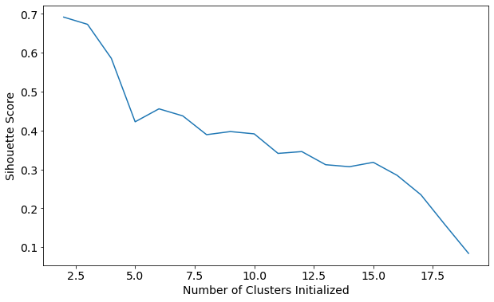
8 DBSCAN 聚类
from sklearn.cluster import DBSCAN
db = DBSCAN(eps=10, min_samples=2).fit(X)
labels = db.labels_
beer['cluster_db'] = labels
beer.sort_values('cluster_db')| name | calories | sodium | alcohol | cost | cluster2 | cluster3 | cluster_db | |
|---|---|---|---|---|---|---|---|---|
| 9 | Budweiser_Light | 113 | 8 | 3.7 | 0.40 | 1 | 1 | -1 |
| 3 | Kronenbourg | 170 | 7 | 5.2 | 0.73 | 0 | 0 | -1 |
| 6 | Augsberger | 175 | 24 | 5.5 | 0.40 | 0 | 0 | -1 |
| 17 | Heilemans_Old_Style | 144 | 24 | 4.9 | 0.43 | 0 | 0 | 0 |
| 16 | Hamms | 139 | 19 | 4.4 | 0.43 | 0 | 0 | 0 |
| 14 | Kirin | 149 | 6 | 5.0 | 0.79 | 0 | 0 | 0 |
| 13 | Becks | 150 | 19 | 4.7 | 0.76 | 0 | 0 | 0 |
| 12 | Michelob_Light | 135 | 11 | 4.2 | 0.50 | 0 | 0 | 0 |
| 10 | Coors | 140 | 18 | 4.6 | 0.44 | 0 | 0 | 0 |
| 0 | Budweiser | 144 | 15 | 4.7 | 0.43 | 0 | 0 | 0 |
| 7 | Srohs_Bohemian_Style | 149 | 27 | 4.7 | 0.42 | 0 | 0 | 0 |
| 5 | Old_Milwaukee | 145 | 23 | 4.6 | 0.28 | 0 | 0 | 0 |
| 4 | Heineken | 152 | 11 | 5.0 | 0.77 | 0 | 0 | 0 |
| 2 | Lowenbrau | 157 | 15 | 0.9 | 0.48 | 0 | 0 | 0 |
| 1 | Schlitz | 151 | 19 | 4.9 | 0.43 | 0 | 0 | 0 |
| 8 | Miller_Lite | 99 | 10 | 4.3 | 0.43 | 1 | 1 | 1 |
| 11 | Coors_Light | 102 | 15 | 4.1 | 0.46 | 1 | 1 | 1 |
| 19 | Schlitz_Light | 97 | 7 | 4.2 | 0.47 | 1 | 1 | 1 |
| 15 | Pabst_Extra_Light | 68 | 15 | 2.3 | 0.38 | 1 | 2 | 2 |
| 18 | Olympia_Goled_Light | 72 | 6 | 2.9 | 0.46 | 1 | 2 | 2 |
-1 表示噪声点, 其他表示分类点, 与 K-Means 的聚类结果基本相符
beer.groupby('cluster_db').mean()| calories | sodium | alcohol | cost | cluster2 | cluster3 | |
|---|---|---|---|---|---|---|
| cluster_db | ||||||
| -1 | 152.666667 | 13.000000 | 4.800000 | 0.510000 | 0.333333 | 0.333333 |
| 0 | 146.250000 | 17.250000 | 4.383333 | 0.513333 | 0.000000 | 0.000000 |
| 1 | 99.333333 | 10.666667 | 4.200000 | 0.453333 | 1.000000 | 1.000000 |
| 2 | 70.000000 | 10.500000 | 2.600000 | 0.420000 | 1.000000 | 2.000000 |
scatter_matrix(X, c=colors[beer.cluster_db], alpha=1, figsize=(10, 10), s=100)array([[<AxesSubplot:xlabel='calories', ylabel='calories'>,
<AxesSubplot:xlabel='sodium', ylabel='calories'>,
<AxesSubplot:xlabel='alcohol', ylabel='calories'>,
<AxesSubplot:xlabel='cost', ylabel='calories'>],
[<AxesSubplot:xlabel='calories', ylabel='sodium'>,
<AxesSubplot:xlabel='sodium', ylabel='sodium'>,
<AxesSubplot:xlabel='alcohol', ylabel='sodium'>,
<AxesSubplot:xlabel='cost', ylabel='sodium'>],
[<AxesSubplot:xlabel='calories', ylabel='alcohol'>,
<AxesSubplot:xlabel='sodium', ylabel='alcohol'>,
<AxesSubplot:xlabel='alcohol', ylabel='alcohol'>,
<AxesSubplot:xlabel='cost', ylabel='alcohol'>],
[<AxesSubplot:xlabel='calories', ylabel='cost'>,
<AxesSubplot:xlabel='sodium', ylabel='cost'>,
<AxesSubplot:xlabel='alcohol', ylabel='cost'>,
<AxesSubplot:xlabel='cost', ylabel='cost'>]], dtype=object)
{kind=link}
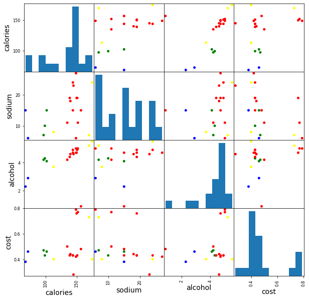